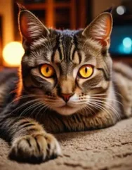
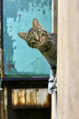
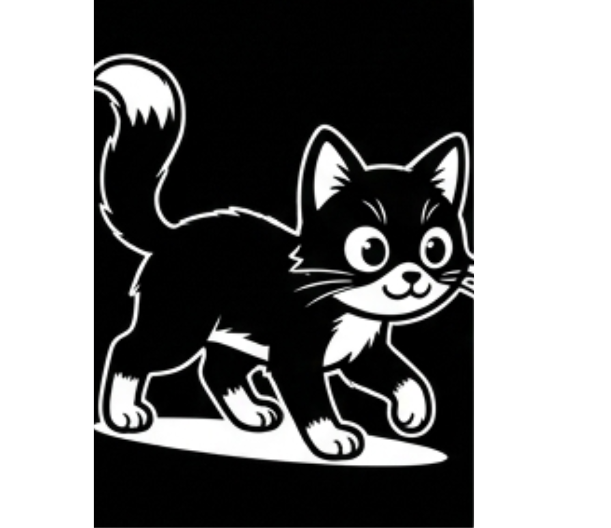

夜、部屋の電気を消した瞬間——猫だけは何事もなかったかのように歩き回る。あの余裕、実は「目のスペック」がズルいレベルだからです。
人間はほぼ100%の光がないと視覚が働きませんが、猫はその約1/6の光量でしっかり周りを認識できます。結果として、暗闇での見え方は人間の約6倍とされています。
懐中電灯を当てると猫の目がキラリと光る——あれは目の奥にある反射板「タペタム・ルシダム」の仕業です。一度網膜を素通りした光をもう一度反射して網膜に送り返すことで、光の感度を最大44%も底上げしています。いわば、目の中に小さな鏡を仕込んでいるようなものです。
※ この反射こそが「目がキラリと光る」現象の正体

猫の網膜には、暗所や動きを感知する「ロッド（杆体）」が人間の5〜6倍もあります。その代わり色を識別する「コーン（錐体）」は少なめ。カラフルに見る力と引き換えに、暗視性能と動体視力を手に入れた進化です。
| 種類 | 役割 | 猫 | 人間 |
|---|---|---|---|
| 🔵 ロッド | 暗所・動き感知 | 人間の5〜6倍 | 基準 |
| 🟡 コーン | 色・詳細識別 | 少ない | 多い |
| 🎨 色覚 | 色の識別 | 青・黄色が得意 | フルカラー |
| 🏃 動体認識 | 動くものを追う | 非常に得意 | 普通 |

猫の瞳孔は縦長スリット型で、明るさに応じて135〜300倍も開き具合を調節できます。人間の瞳孔調節能力は約15倍なので、桁違いの可変域です。
| # | メカニズム | 効果 |
|---|---|---|
| ① | ロッドが人間の5〜6倍 | 薄明・動きを感知しやすい |
| ② | タペタム・ルシダム層 | 光を再利用して感度44%UP |
| ③ | 瞳孔が135〜300倍調節 | わずかな光も見逃さない |
猫は厳密には夜行性ではなく「薄明性（はくめいせい）」の動物。明け方と夕暮れにもっとも活発に動きます。夜中の「運動会」も、この本能のスイッチが入った証拠です。
A. 見えません。光がゼロの環境では猫でも視覚は働かず、その代わりヒゲや聴覚・嗅覚で周囲を把握しています。
A. 完全な色盲ではありませんが、コーンが少ないため色の識別範囲が人間より狭く、赤・緑の区別が苦手です。暗視能力を優先した進化のトレードオフです。
A. 薄明性の本能によるものです。暗くなると瞳孔が開き狩り本能が刺激されるため、「夜の運動会」は猫にとってごく自然な行動です。

次に夜中の猫が颯爽と歩き回る姿を見たら、その目に隠された驚異のテクノロジーを思い出してみてください🐱✨